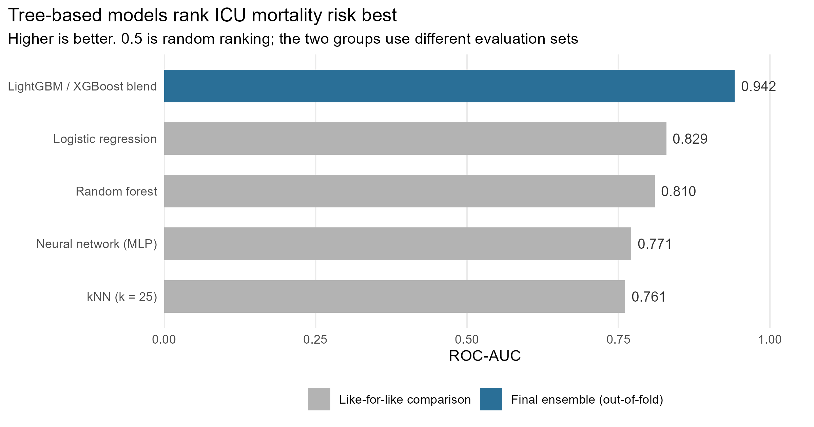

Five model families benchmarked against a gradient boosting ensemble on MIMIC-III ICU admissions, scored on a Kaggle leaderboard.
Published
May 24, 2026
Problem: Rank ICU patients by their risk of dying in hospital, using what is known when they arrive, so attention goes to the highest-risk patients first.
Approach: Five model families compared under one fixed preprocessing recipe, then a LightGBM and XGBoost blend tuned with repeated cross-validation.
Result: Out-of-fold ROC-AUC of 0.942; the top grade band started at 0.94. Logistic regression beat the neural network.
Given only what is known about a patient at the moment they arrive in intensive care, how well can we predict whether they will die before discharge? The purpose is triage rather than explanation - ranking patients so that limited clinical attention flows toward the people most likely to need it.
The work was a Kaggle competition for a machine learning unit, graded on ROC-AUC on a hidden test set in bands topping out at 0.94. Submissions had to be probabilities, so nothing could be tuned to a threshold, and the leaderboard only showed the score on half the test set - the mark came from the other half.
Data and cleaning
A preprocessed extract of MIMIC-III, one row per ICU stay: first-day vital signs summarised as min, max and mean, demographics and admission details, plus a separate table of ICD-9 diagnosis codes. The outcome, HOSPITAL_EXPIRE_FLAG, is positive for roughly 11.2% of stays.
Three parts needed care:
Age had to be reconstructed. MIMIC shifts the date of birth of any patient over 89 roughly 300 years into the past as a de-identification measure, so a naive ADMITTIME - DOB returns ages in the hundreds. Ages were capped at 90, with an indicator kept, because being old enough to be date-shifted is itself a signal.
The diagnosis columns were unusable raw. Free-text DIAGNOSIS held about 5,000 unique values and behaved as an ID column, so it was dropped. The 555 ICD-9 codes were rolled into the ~17 standard chapters, and for the boosting pass also multi-hot encoded over the 300 most common codes.
Derived features carried more signal than raw levels: per-vital ranges, shock index and pulse pressure. A heart rate of 110 means something different at a systolic pressure of 140 than at 80.
Encoding is the step most likely to fail silently. Levels are fitted on train and applied to test, so an unseen test level becomes NA instead of quietly shifting every column to its right:
Code
for (c in cat_cols) { lev <-unique(train_fe[[c]])# -1L because factor() codes from 1, while LightGBM wants categoricals from 0 train_fe[[c]] <-as.integer(factor(train_fe[[c]], levels = lev)) -1L test_fe[[c]] <-as.integer(factor(test_fe[[c]], levels = lev)) -1L}
The project ran in two passes. The first held preprocessing fixed - rare-level consolidation, one-hot encoding, then standardisation - and swapped only the model, so any difference in score came from the model family rather than the features. Five families were compared: logistic regression, kNN at k = 25, a random forest, a 16-unit single-layer MLP, and XGBoost.
The second pass took the winning family and pushed it: richer diagnosis features, stratified cross-validation repeated over 3 seeds x 5 folds with early stopping, and a 70/30 blend of LightGBM and XGBoost. Repeating the folds matters at an 11% positive rate, where a single 5-fold split carries enough noise to move the estimated AUC on its own:
Code
for (seed inc(42L, 123L, 2024L)) { fold_idx <-make_folds(y, N_SPLITS, seed) # stratified on the outcome seed_oof <-rep(0, length(y))for (k inseq_along(fold_idx)) { va <- fold_idx[[k]] tr <-setdiff(seq_along(y), va) dtr <-lgb.Dataset(X[tr, ], label = y[tr], categorical_feature = cat_cols) dva <-lgb.Dataset(X[va, ], label = y[va], categorical_feature = cat_cols,reference = dtr) m <-lgb.train(c(lgb_params, list(seed = seed)), dtr, nrounds =4000L,valids =list(val = dva), early_stopping_rounds =100L) seed_oof[va] <-predict(m, X[va, ]) # each row scored by a model test_lgb <- test_lgb +predict(m, X_test) # that never saw it } oof_lgb <- oof_lgb + seed_oof}
The blend weight came from the centre of the flat region of the weight sweep rather than its peak, since picking the exact top of a noisy curve is a quiet form of overfitting the validation set.
Boosting rather than a linear model because clinical risk is threshold-like - an SpO2 below 88 is categorically bad - which trees represent natively. Two boosting libraries rather than one because LightGBM grows trees leaf-wise and XGBoost level-wise, so their errors are partly decorrelated and the average beats either alone.
Logistic regression beat the neural network. On tabular data of this size, model capacity is not free - the extra flexibility has to be paid for in data, and here it could not be afforded.
Findings

Fig 1. Tree-based models rank ICU mortality risk substantially better than distance- or neuron-based ones; in the like-for-like comparison the linear model finishes second only to the forest.
Within the controlled comparison the ordering was kNN 0.761, MLP 0.771, random forest ~0.81, logistic regression 0.829. Logistic regression finishing ahead of the neural network suggests mortality risk is broadly additive in these inputs, which is exactly the structure a linear model captures most efficiently. The kNN result is structural rather than a tuning failure: after one-hot encoding, distances concentrate, and a 25-patient neighbourhood contains under three deaths on average.
The final blend reached 0.942 out-of-fold. That number is not comparable to the four above it - it comes from a different evaluation scheme on a feature set several hundred columns wider, so much of the gap is features rather than algorithm.
What this means in practice
A model like this would support clinical judgement, not replace it: a hospital could use it to order a review list so the highest-risk new admissions are seen first. Two things would have to change before that. The diagnosis codes would need replacing with information available at admission (see below), and the probabilities would need calibrating, because a ward planning staffing needs to know whether a score of 0.3 really means a 30% risk. The cost of errors is also lopsided - missing a patient who deteriorates is far worse than reviewing one who did not - so the alert threshold should be set on that trade-off, not on AUC.
Assumptions and limitations
Folds were stratified on the outcome, not grouped by patient. Splitting happened at ICU-stay level. If a patient contributes more than one stay, their rows can land in different folds and the model can effectively memorise them, inflating the out-of-fold estimate. Patient-level splitting via group_vfold_cv() is the fix. I have not quantified how much repeat admission exists in this extract, so I do not know the size of the effect.
Diagnosis codes are not available at hour zero. ICD-9 codes are assigned over the stay and finalised at discharge, so using them to predict that stay’s outcome is defensible as a retrospective benchmark but would not transfer to real-time use.
Logistic regression assumes independent observations and linearity in the log-odds. The first is questionable for the same repeat-admission reason; the second was not formally checked.
The probabilities are ranked, not calibrated. Rebalancing the positive class distorts the output scale and averaging fifteen models compresses it toward the middle. PR-AUC was computed alongside ROC-AUC, which is the right instinct at an 11% base rate, but no calibration plot was produced.
None of this licenses a claim that any feature causes mortality, or that acting on the model would change an outcome. It supports one claim only: the ranking is informative.
Source Code
---title: "ICU Mortality Probability Prediction"description: "Five model families benchmarked against a gradient boosting ensemble on MIMIC-III ICU admissions, scored on a Kaggle leaderboard."date: 2026-05-24categories: [R, tidymodels, LightGBM, XGBoost]image: "../assets/figures/icu-model-comparison.png"image-alt: "Horizontal bar chart of ROC-AUC by model, with the boosting blend highest at 0.942."# The page used to live at icu-mortality-prediction_1.html; keep old links working.aliases: - icu-mortality-prediction_1.htmlexecute: # Code on this page is shown to explain the method, never run. MIMIC-III is # credentialled-access data and is not in this repo, and the full fit is 30 # boosted models with early stopping. Blocks are folded by default. eval: false---::: {.project-summary}- **Problem:** Rank ICU patients by their risk of dying in hospital, using what is known when they arrive, so attention goes to the highest-risk patients first.- **Approach:** Five model families compared under one fixed preprocessing recipe, then a LightGBM and XGBoost blend tuned with repeated cross-validation.- **Result:** Out-of-fold ROC-AUC of 0.942; the top grade band started at 0.94. Logistic regression beat the neural network.- **Skills:** R, tidymodels, LightGBM, XGBoost, feature engineering, cross-validation.:::## The questionGiven only what is known about a patient at the moment they arrive in intensivecare, how well can we predict whether they will die before discharge? The purposeis triage rather than explanation - ranking patients so that limited clinicalattention flows toward the people most likely to need it.The work was a Kaggle competition for a machine learning unit, graded on ROC-AUCon a hidden test set in bands topping out at 0.94. Submissions had to beprobabilities, so nothing could be tuned to a threshold, and the leaderboard onlyshowed the score on half the test set - the mark came from the other half.## Data and cleaningA preprocessed extract of MIMIC-III, one row per ICU stay: first-day vital signssummarised as min, max and mean, demographics and admission details, plus aseparate table of ICD-9 diagnosis codes. The outcome, `HOSPITAL_EXPIRE_FLAG`, ispositive for roughly 11.2% of stays.Three parts needed care:**Age had to be reconstructed.** MIMIC shifts the date of birth of any patient over89 roughly 300 years into the past as a de-identification measure, so a naive`ADMITTIME - DOB` returns ages in the hundreds. Ages were capped at 90, with anindicator kept, because being old enough to be date-shifted is itself a signal.**The diagnosis columns were unusable raw.** Free-text `DIAGNOSIS` held about 5,000unique values and behaved as an ID column, so it was dropped. The 555 ICD-9 codeswere rolled into the ~17 standard chapters, and for the boosting pass alsomulti-hot encoded over the 300 most common codes.**Derived features carried more signal than raw levels:** per-vital ranges, shockindex and pulse pressure. A heart rate of 110 means something different at asystolic pressure of 140 than at 80.```{r}#| label: feature-engineeringfe_basic <-function(df) { df |>mutate(age_days =as.numeric(difftime(ADMITTIME, DOB, units ="days")),AGE =pmin(pmax(age_days /365.25, 0), 90),AGE_OVER_89 =as.integer(age_days /365.25>89),HeartRate_Range = HeartRate_Max - HeartRate_Min,SysBP_Range = SysBP_Max - SysBP_Min,ShockIndex = HeartRate_Mean /na_if(SysBP_Mean, 0),PulsePressure = SysBP_Mean - DiasBP_Mean ) |>select(-DOB, -ADMITTIME, -Diff, -DIAGNOSIS, -age_days)}```Encoding is the step most likely to fail silently. Levels are fitted on train andapplied to test, so an unseen test level becomes `NA` instead of quietly shiftingevery column to its right:```{r}#| label: categorical-encodingfor (c in cat_cols) { lev <-unique(train_fe[[c]])# -1L because factor() codes from 1, while LightGBM wants categoricals from 0 train_fe[[c]] <-as.integer(factor(train_fe[[c]], levels = lev)) -1L test_fe[[c]] <-as.integer(factor(test_fe[[c]], levels = lev)) -1L}```[View the code on GitHub](https://github.com/tlabagala/your-repo)## Method, and why this oneThe project ran in two passes. The first held preprocessing fixed - rare-levelconsolidation, one-hot encoding, then standardisation - and swapped only the model,so any difference in score came from the model family rather than the features.Five families were compared: logistic regression, kNN at k = 25, a random forest, a16-unit single-layer MLP, and XGBoost.The second pass took the winning family and pushed it: richer diagnosis features,stratified cross-validation repeated over 3 seeds x 5 folds with early stopping,and a 70/30 blend of LightGBM and XGBoost. Repeating the folds matters at an 11%positive rate, where a single 5-fold split carries enough noise to move theestimated AUC on its own:```{r}#| label: lightgbm-cvfor (seed inc(42L, 123L, 2024L)) { fold_idx <-make_folds(y, N_SPLITS, seed) # stratified on the outcome seed_oof <-rep(0, length(y))for (k inseq_along(fold_idx)) { va <- fold_idx[[k]] tr <-setdiff(seq_along(y), va) dtr <-lgb.Dataset(X[tr, ], label = y[tr], categorical_feature = cat_cols) dva <-lgb.Dataset(X[va, ], label = y[va], categorical_feature = cat_cols,reference = dtr) m <-lgb.train(c(lgb_params, list(seed = seed)), dtr, nrounds =4000L,valids =list(val = dva), early_stopping_rounds =100L) seed_oof[va] <-predict(m, X[va, ]) # each row scored by a model test_lgb <- test_lgb +predict(m, X_test) # that never saw it } oof_lgb <- oof_lgb + seed_oof}```The blend weight came from the centre of the flat region of the weight sweeprather than its peak, since picking the exact top of a noisy curve is a quiet formof overfitting the validation set.Boosting rather than a linear model because clinical risk is threshold-like - anSpO2 below 88 is categorically bad - which trees represent natively. Two boostinglibraries rather than one because LightGBM grows trees leaf-wise and XGBoostlevel-wise, so their errors are partly decorrelated and the average beats eitheralone.> Logistic regression beat the neural network. On tabular data of this size, model> capacity is not free - the extra flexibility has to be paid for in data, and here> it could not be afforded.## Findings::: {.column-page}{.figure-wide}:::Within the controlled comparison the ordering was kNN 0.761, MLP 0.771, randomforest ~0.81, logistic regression 0.829. Logistic regression finishing ahead of theneural network suggests mortality risk is broadly additive in these inputs, whichis exactly the structure a linear model captures most efficiently. The kNN resultis structural rather than a tuning failure: after one-hot encoding, distancesconcentrate, and a 25-patient neighbourhood contains under three deaths on average.The final blend reached 0.942 out-of-fold. That number is not comparable to thefour above it - it comes from a different evaluation scheme on a feature setseveral hundred columns wider, so much of the gap is features rather thanalgorithm.## What this means in practiceA model like this would support clinical judgement, not replace it: a hospitalcould use it to order a review list so the highest-risk new admissions are seenfirst. Two things would have to change before that. The diagnosis codes would needreplacing with information available at admission (see below), and theprobabilities would need calibrating, because a ward planning staffing needs toknow whether a score of 0.3 really means a 30% risk. The cost of errors is alsolopsided - missing a patient who deteriorates is far worse than reviewing one whodid not - so the alert threshold should be set on that trade-off, not on AUC.## Assumptions and limitations**Folds were stratified on the outcome, not grouped by patient.** Splitting happenedat ICU-stay level. If a patient contributes more than one stay, their rows can landin different folds and the model can effectively memorise them, inflating theout-of-fold estimate. Patient-level splitting via `group_vfold_cv()` is the fix. Ihave not quantified how much repeat admission exists in this extract, so I do notknow the size of the effect.**Diagnosis codes are not available at hour zero.** ICD-9 codes are assigned overthe stay and finalised at discharge, so using them to predict that stay's outcomeis defensible as a retrospective benchmark but would not transfer to real-time use.**Logistic regression assumes independent observations and linearity in thelog-odds.** The first is questionable for the same repeat-admission reason; thesecond was not formally checked.**The probabilities are ranked, not calibrated.** Rebalancing the positive classdistorts the output scale and averaging fifteen models compresses it toward themiddle. PR-AUC was computed alongside ROC-AUC, which is the right instinct at an11% base rate, but no calibration plot was produced.None of this licenses a claim that any feature causes mortality, or that acting onthe model would change an outcome. It supports one claim only: the ranking isinformative.